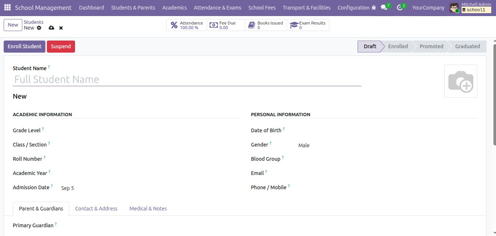
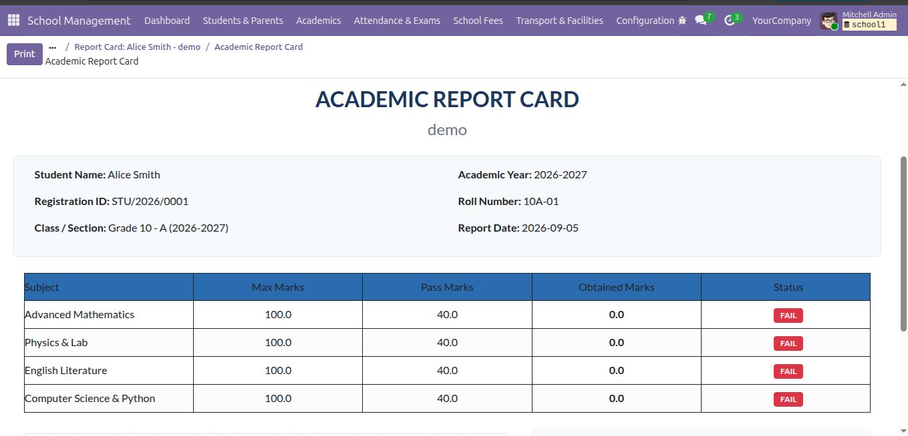
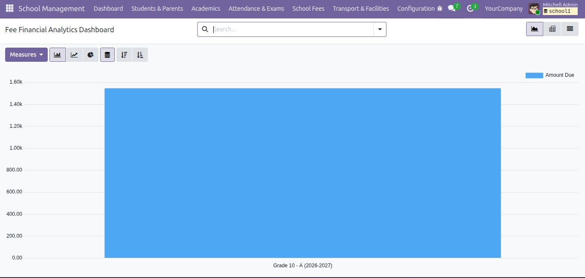
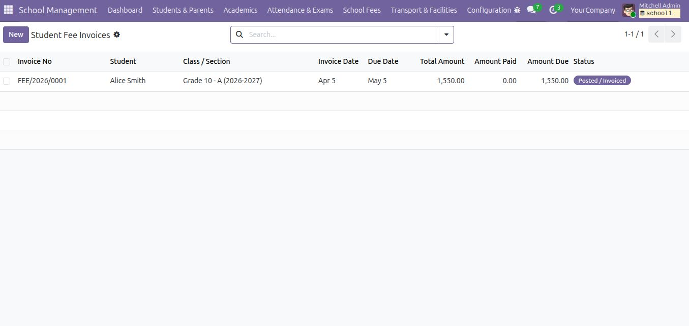
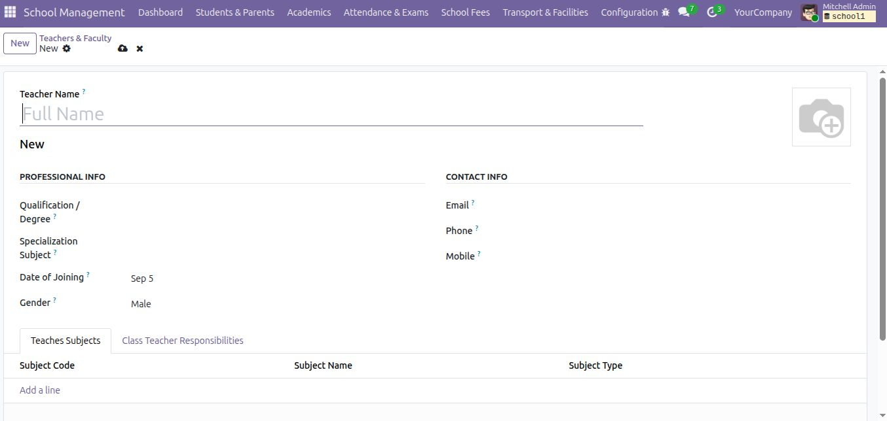
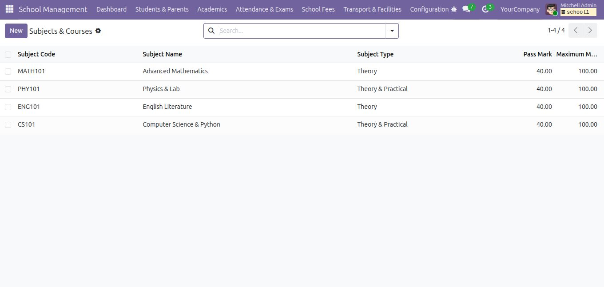
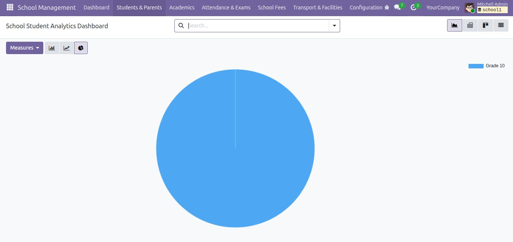

| 🎓Students | 📝Admissions | 📚Academics | ✓Attendance | 📊Exams | ₹Fees |
Keep core school records connected in one Odoo database so staff can move naturally from enrollment to daily operations, financial tracking and family-facing information.
| Student LifecycleProfiles, registration, guardians, enrollment and connected student records. | Academic ControlYears, terms, grades, classes, sections, subjects and teachers. | Daily OperationsAttendance, examinations, transport, hostel and library records. | Finance & ReportsFee structures, statements, payments, balances and printable reports. |
| 01Apply | › | 02Review | › | 03Enroll | › | 04Attend | › | 05Assess | › | 06Report |
Watch the actual SDS School Management System workflow with on-screen action captions explaining each step.
| 01 · Admission | 02 · Enrollment | 03 · Attendance | 04 · Exams | 05 · Fees | 06 · Portal & Reports |
Real screens from the School Management System, presented around the workflows users work with every day.
| 01 Student Management | ODOO 19 • SCHOOL MANAGEMENT |

|
02 ACADEMIC RESULTS
 Academic PerformanceWhat it does: Presents the student's examination performance in a structured academic view.
How it is used: Staff can review subject-wise marks together with calculated totals, percentage, grade and result status. Workflow: Examination records feed the student's academic results, which can then be used for result review and the printable report card. |
03 FEE MANAGEMENT
 Fee MonitoringWhat it does: Gives staff visibility into student fee information and collection status.
How it is used: Users can review fee statements, amounts paid and remaining balances instead of checking separate records manually. Workflow: Fee structures and student fee records are maintained in the backend, while relevant fee information can also be made available to the linked guardian through the portal. |
| 04 Printable Academic Report | READY FOR SCHOOL USE |
|
05 · Online AdmissionWhat it does: Provides a public-facing admission entry point for prospective students and their guardians.
How it is used: The applicant enters the required admission and family information online and submits it to the school for review. Workflow: Online Application → Staff Review → Approval → Student and Guardian records. The admission form therefore acts as the starting point of the school workflow. |
 06 · Guardian PortalWhat it does: Gives an authenticated guardian access to information belonging to the children linked to that guardian.
How it is used: The parent opens the portal, selects a child and can review available school information such as fees, attendance and examination results. Workflow: Portal User → Guardian → My Children → Student Details → Attendance / Results / Fees. Access remains tied to the guardian-child relationship. |
|
 07 · Teacher ManagementWhat it does: Maintains teacher-related information used by the school.
How it is used: Administrators keep faculty details organized and associate teachers with the relevant academic responsibilities. Why it matters: Teacher records support the academic structure and help keep staff information connected with school operations. |
 08 · Curriculum & SubjectsWhat it does: Defines the subjects used in the school's academic structure.
How it is used: Administrators configure subject information such as subject identity and assessment-related values. Workflow: Academic Setup → Subjects → Classes / Academic Activities → Examinations and Results. Correct subject setup provides the foundation for academic records. |

| 👩🏫 TeachersProfiles, qualifications and responsibilities. | 🚌 TransportOperational transport records for students. | 🏠 HostelMaintain hostel-related school records. | 📖 LibraryLibrary operational records inside the school system. |
|
GET STARTED
Quick setup
|
INCLUDED OUTPUTS
Professional reports
|
| Technical Name | SDS_school_management_system | Odoo Version | 19.0 |
| License | LGPL-3 | Dependencies | base, mail, website, portal |